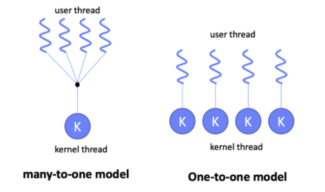

유저 레벨 스레드와 커널 레벨 스레드에 대해 알아봅시다.
유저 레벨 스레드
- 사용자 영역에서 스레드 라이브러리에 의해 생성/관리/스케줄 됩니다. 또한 스레드 라이브러리가 TCB를 사용자 공간에 생성하고 소유합니다.
1
2Thread thread = new Thread();
thread.start(); - 커널은 유저 레벨 스레드의 존재를 모릅니다. 따라서 커널의 관리(개입)를 받지 않으며 생성 및 관리의 오버헤드가 적습니다. 이식성 또한 좋습니다.
유저 스레드 방식이 커널 스레드보다 오버헤드가 적은 이유는 스레드간 전환할 때마다 커널 스케줄러를 호출할 필요가 없기 때문입니다. 유저 스레드는 스레드 스케줄러가 유저 모드에만 있기 때문에 그런 오버헤드는 발생하지 않습니다.커널 스케줄러로 진입하려면 프로세스 모드를 사용자 모드에서 커널 모드로 전환해야 하는데, 이때 사용자쪽 하드웨어와 레지스터를 전부 저장시키고, 커널 레지스터로 복구하고, 기타 등등의 수많은 작업이 일어납니다. 따라서 유저 모드와 커널 모드를 많이 왔다갔다 할 수록 성능은 급격하게 떨어집니다.
- N개의 사용자 수준 스레드가 1개의 커널 수준 스레드에 매핑됩니다. → N:1 매핑
- 멀티 코어 CPU 환경에서 멀티 스레드의 병렬 처리가 불가능 합니다. → Concurrency
- 하나의 사용자 레벨 스레드가 시스템 호출 도중 입출력 등으로 인해 중단(Blocked)되면 프로세스의 모든 사용자 레벨 스레드가 중단됩니다.
커널 레벨 스레드
- OS 커널 레벨에서 커널에 의해 생성/관리/스케줄 됩니다. → 커널 API 혹은 시스템 호출 필요
- 커널이 TCB를 커널 공간에 생성하고 소유합니다.
- 커널 영역에서 스레드의 생성/관리를 수행하기 때문에 컨텍스트 스위치 등의 오버헤드가 큽니다.
- 사용자 수준 스레드와 커널 수준 스레드가 1:1 매핑되는 구조입니다. 따라서 사용자 수준 스레드가 만들어지면 그에 따라 커널 수준 스레드도 생성됩니다.
- 멀티 코어 CPU 환경에서 멀티 스레드의 병렬 실행이 가능합니다. → Parallelism
- 하나의 커널 레벨 스레드가 시스템 호출 도중 입출력 등으로 중단(Blocked)되어도 해당 스레드만 중단 됩니다.